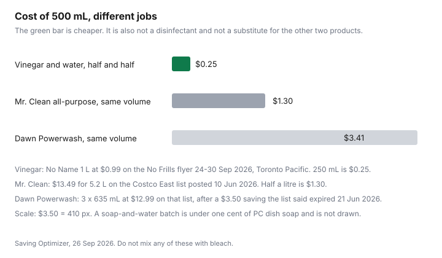

Household Items and Supplies · Canada
DIY Household Cleaners in Canada: What Actually Works, What It Costs, and What Never to Mix
A homemade cleaner is a price only when you know the job. Vinegar and water can cost 25 cents for half a litre. It still will not do what a disinfectant label claims, and it will damage some surfaces. This page prices two grocery and warehouse lines that were actually opened, says where a brand bottle still wins, and stops at the mix Health Canada tells you not to make.
Key takeaways
- No Name white vinegar, 1 L at $0.99 on a Toronto No Frills flyer for 24 to 30 Sep 2026, makes a 500 mL half-and-half spray for $0.25. That is a cleaner, not a disinfectant.
- Five millilitres of the $1.00 PC dish soap on that flyer, in 500 mL of water, is under one cent. Baking soda had no verified price, so it is a method with no dollar.
- The same 500 mL of Mr. Clean, from the Costco East list posted 10 Jun 2026, is $1.30. Dawn Powerwash at the same volume is $3.41. Those are different jobs. The chart does not pretend they are substitutes.
- Never mix bleach with vinegar, ammonia, or any other cleaner. Health Canada's advisory, opened 26 Sep 2026, is the rule. Do not store leftover diluted bleach.
- A DIN designation on the label is what this draft could confirm for an authorized biocide. A digit count was not on the page that opened. Vinegar does not become one by being poured into a spray bottle.
Three DIY cleaners that genuinely work—and the jobs where store-bought still wins
The first is vinegar and water, half and half, for ordinary glass and for a mineral film on a surface the care sheet allows. No Name pure white vinegar, 1 L, was $0.99 on the No Frills flyer for 24 to 30 Sep 2026 at Darren's No Frills, 372 Pacific Ave, Toronto. Half a litre of spray uses 250 mL. 250 divided by 1,000, times $0.99, is $0.2475, which is $0.25. It cuts some hard-water film because it is an acid. It does not disinfect. If the glass is a coated shower door, stop and read the sheet before you spray.
The second is dish soap and water for grease on a counter or a dish that can take soap. The same flyer priced PC dishwashing liquid at $1.00 for 638 or 739 mL. Five millilitres from the 638 mL bottle is 5 divided by 638, times $1.00, which is about 0.8 cents. From the 739 mL bottle it is less. Call it under one cent in a 500 mL bottle of water. That is a degreaser in the ordinary sense. It is not a disinfectant, and a soapy residue is its own film if you do not rinse. Dawn Powerwash on the Costco list is a different product: a dish spray, not this bottle.
The third is baking soda as a mild scrub, dry or as a paste with water, on a sink that is already allowed to see a mild abrasive. A baking-soda shelf price was not on a page that survived a check on 26 Sep 2026. Flyer scrapes that showed absurd per-box figures were discarded. There is no cost per batch for baking soda in the table. The method can still be useful. The dollar is blank until you divide the box in your hand by the grams you use.
Store-bought still wins on four jobs. A kill claim needs a product whose label carries the DIN designation and a contact time, which is the section further down. An oven is a rare job for a cleaner made for ovens. No oven-cleaner price was opened, so this page does not invent a DIY oven paste or a price for the bottle you keep. A toilet bowl that needs an acid cleaner is Lysol toilet-bowl cleaner on the Costco East list: four times 946 mL, 3.784 L, at $10.99, which is $2.90 per litre. That is a bought descaler with its own label, not a licence to mix it with bleach. A dish load is a dishwasher pac or a dish liquid, priced on the store-brand guide. Vinegar in the machine is not that math.
Cost per batch vs brand-name spray using Canadian shelf prices (table)
Mr. Clean on the Costco East list posted 10 Jun 2026 was 5.2 L at $13.49, which is $2.59 per litre. Half a litre is $1.30. Dawn Powerwash was three times 635 mL, 1.905 L, at $12.99 after a $3.50 instant saving the list said expired 21 Jun 2026. Half a litre of that unit is $3.41. Pine-Sol was 5.18 L at $13.79, $2.66 per litre, so 500 mL is $1.33, and it is a different scent and a different job from vinegar. The chart draws vinegar, Mr. Clean, and Dawn Powerwash because those three are the comparison people ask for, and the caption says the jobs differ.
| Batch | Arithmetic | Cost | Same job as a brand spray? |
|---|---|---|---|
| Vinegar and water, half and half, 500 mL | 250 mL times $0.99 per litre | $0.25 | A light cleaner and a glass spray where the surface allows. Not a disinfectant. |
| Dish soap and water, 5 mL soap in 500 mL | 5 divided by 638 mL, times $1.00 | Under 1 cent (about 0.8 cents) | Grease, if you rinse. Not Dawn Powerwash, and not a disinfectant. |
| Baking soda scrub | No verified box price | Not calculated | A mild scrub only. No dollar until you price the box. |
| Mr. Clean, 500 mL | $13.49 divided by 5.2 L, times 0.5 | $1.30 | All-purpose from that jug. Not the vinegar job. |
| Pine-Sol, 500 mL | $13.79 divided by 5.18 L, times 0.5 | $1.33 | That product's job, per its label. |
| Dawn Powerwash, 500 mL | $12.99 divided by 1.905 L, times 0.5 | $3.41 | A dish spray. Do not read the $3.41 as the cost of vinegar. |
The unit-price guide is the same division on a grocery tag. A spray that costs $3.41 for 500 mL can still be the right buy when the job is baked-on grease and the vinegar has already failed. The saving is refusing to buy the spray for a window.
Surfaces DIY acids can damage: natural stone, hardwood finishes, and some appliance coatings
Vinegar is an acid. That is why it shifts mineral film, and it is why it does not belong on every counter. No stone-institute page was opened for this draft, so there is no etch percentage here. The rule you can use without a lab is the care sheet that came with the surface. If the sheet does not allow acid, do not use this spray on it.
| Surface | What this page will say |
|---|---|
| Granite, marble, other natural stone | Do not use vinegar unless the supplier's care sheet says that finish can take acid. No etch rate was opened. |
| Hardwood finish | Do not soak the floor in vinegar or water. Follow the finish maker's sheet. Standing liquid is a risk this page does not quantify. |
| Ordinary window glass | The job the $0.25 spray is priced for. Wipe it off. A coated shower door is a different surface until its sheet allows acid. |
| Aluminum | The biocide guidance says sodium hypochlorite can damage aluminum. That is bleach, used only as its label allows. It is not a vinegar recipe. |
| Stainless appliance fronts | No compatibility test was opened. Use the appliance sheet. Do not invent a vinegar dose for a coated panel. |
Never mix: bleach + vinegar, bleach + ammonia—Health Canada safety basics
Health Canada's public advisory "Reduce your risk from toxic gases: Never mix bleach with other cleaning products," opened 26 Sep 2026, prints a last-updated line of 2021-02-08 and an original published date of 2021-12-06. Both dates are on the page. The instruction is to never mix any cleaning product with household bleach. Bleach reacts with ammonia, and the advisory includes some glass cleaners in that group. It reacts with acids, and the advisory names vinegar. Effects named on the page include burning eyes and light-headedness, and the page says the gases can be deadly. Ventilate. Wear gloves and eye protection with bleach. Keep bleach and other household chemicals out of sight and reach of children. Do not clean skin with bleach. Do not eat or drink a cleaner.
The biocide labelling guidance says the same chemistry in the language of a label writer. A hazard statement should tell you that sodium hypochlorite forms toxic chlorine gas when mixed with acids or ammonia, and that the product should never be used at the same time as those chemicals. An example line in the guidance is "Never mix with other acids or ammonia compounds" on a sodium hypochlorite biocide. This page will not give a recipe that mixes bleach with vinegar, with ammonia, with glass cleaner, or with the dish-soap spray. The only dilution this page will point you to is the one printed on the bleach bottle itself, which is bleach and water. The advisory also says not to store leftover diluted bleach, because you may forget the container has bleach in it. Mix what you will use, use it, and do not keep a jug of "maybe bleach" under the sink.
A DIY shelf that includes both a vinegar spray and a bleach jug is safe only if they never meet in the same bucket, on the same cloth, or in the same bottle. Rinse the cloth. Do not "boost" one with the other. The smaller closet guide is where that jug count is cut down so the two bottles are not neighbours by accident.
Disinfecting vs cleaning: when you need a DIN-registered disinfectant in Canada
Cleaning removes soil. Disinfecting is a claim about killing microorganisms, and it belongs on a product that is allowed to make it. The biocide labelling guidance opened 26 Sep 2026 says a Canadian label includes an identification number and a "DIN" designation. The page that opened did not print a digit count, so this guide does not invent "eight digits" or any other length. Look at the bottle. If the job is a smear on a counter, soap or the all-purpose is the cleaner. If the job is disinfecting, use the product whose label carries the DIN designation, and leave it wet for the contact time that label prints. Wiping it off immediately is not following the label.
Vinegar from the grocery flyer is sold as a food. Pouring it into a spray bottle does not turn it into an authorized biocide. Do not write "disinfectant" on that bottle. Lysol disinfecting wipes on the Costco list were five packs of 110 at $19.99, after a $5.00 saving the list said expired 21 Jun 2026. They are a disinfectant only to the extent the label you are holding says so. Read that label. A private-label disinfectant, under the same guidance, has to keep the same brand name, authorization holder, conditions of use, identification number, formulation, and packaging as the initial biocide. A store's trade dress does not create a new kill claim.
Label, store, and use-up rules so DIY doesn't become another cluttered shelf
The cheap spray becomes clutter when the bottle is anonymous. Write the product, the mix, and the date on the outside. Keep a photo of the original vinegar or soap label if you need the warnings. Do not use a drink bottle, a jam jar, or anything a child or a pet could mistake for a beverage. Child-resistant caps do not survive that move. Health Canada's advisory says to keep household chemicals out of reach of children. The same shelf rule covers pets. If you cannot fit the warnings on the new bottle, do not decant. Use the bottle it came in.
No shelf life for a vinegar-and-water spray was printed on a page opened for this draft. Make less than you think. A 500 mL bottle at $0.25 is not a case for stocking a dozen. Throw the spray out when the label has worn off or you cannot remember the mix. Do not store diluted bleach at all, per the advisory. The declutter guide is what you do with the bottles already in the way. The cart-split guide is where a warehouse jug of cleaner belongs only if you will finish it.

Sources & date stamps
- No Frills flyer, 24 to 30 Sep 2026, Darren's No Frills, 372 Pacific Ave, Toronto: No Name pure white vinegar, 1 L, $0.99. PC dishwashing liquid, $1.00 for 638 or 739 mL. Opened 26 Sep 2026. Baking soda was not given a price.
- Costco East cleaning list, posted 10 Jun 2026: Mr. Clean 5.2 L at $13.49. Pine-Sol 5.18 L at $13.79. Dawn Powerwash, 3 times 635 mL at $12.99, after a $3.50 saving the list said expired 21 Jun 2026. Lysol toilet bowl, 4 times 946 mL at $10.99. Lysol wipes, 5 times 110 at $19.99, after a $5.00 saving the list said expired 21 Jun 2026.
- Health Canada public advisory RA-62070, "Reduce your risk from toxic gases: Never mix bleach with other cleaning products," opened 26 Sep 2026. The page prints last updated 2021-02-08 and original published date 2021-12-06. Never mix bleach with other cleaners, including vinegar and ammonia. Do not store leftover diluted bleach.
- Health Canada, Guidance on labelling requirements for biocides: General labelling considerations, opened 26 Sep 2026. DIN designation on the label. Sodium hypochlorite and acids or ammonia. Private-label biocides must match the authorized product. Aluminum is named as a sodium hypochlorite surface concern. No digit count for the DIN was on that page. No stone-etch study was opened.
Frequently asked questions
Does vinegar actually disinfect?
Not in the sense a disinfectant label means. Health Canada's biocide labelling guidance, opened 26 Sep 2026, is about products that carry a market authorization and a DIN designation. Grocery vinegar is a food acid. The half-and-half spray in the table is priced as a cleaner, at $0.25 for 500 mL. It is not a kill claim, and it must not be mixed with bleach.
What household chemicals should never be mixed?
Health Canada's advisory opened 26 Sep 2026 says never mix any cleaning product with household bleach. Bleach reacts with ammonia, including some glass cleaners, and with acids, including vinegar. The advisory names burning eyes, light-headedness, and deaths. The biocide labelling guidance uses the same example: sodium hypochlorite forms toxic chlorine gas with acids or ammonia. Use bleach only with water, at the dilution on its own label, and do not store that leftover mix.
Can I use vinegar on granite or marble?
This page did not open a stone-care standard, so it does not quote an etch rate. Vinegar is an acid. Do not put it on granite, marble, or other natural stone unless that surface's care sheet says the finish can take acid. The same caution covers a hardwood finish and any appliance coating the maker warns about. Ordinary window glass is the job the cost chart prices. A coated shower door is not that job until the sheet says so.
What is a DIN and when do I need one?
On the biocide labelling guidance opened 26 Sep 2026, a Canadian biocide label includes an identification number and a DIN designation. This page does not restate a digit count, because that count was not on the page that opened. You need that product when the job is disinfecting, and you follow the contact time on the label. A spray bottle of vinegar does not pick up a DIN because you decanted it.
How long does a homemade cleaner keep?
No shelf-life number for a vinegar spray was on a page opened 26 Sep 2026, so this guide does not invent one. Make a small batch, write the name and the date on the bottle, and throw it out when you cannot say what is in it. Health Canada's bleach advisory says not to store leftover diluted bleach, because you may forget the container has bleach in it. A drink bottle is the wrong container either way.